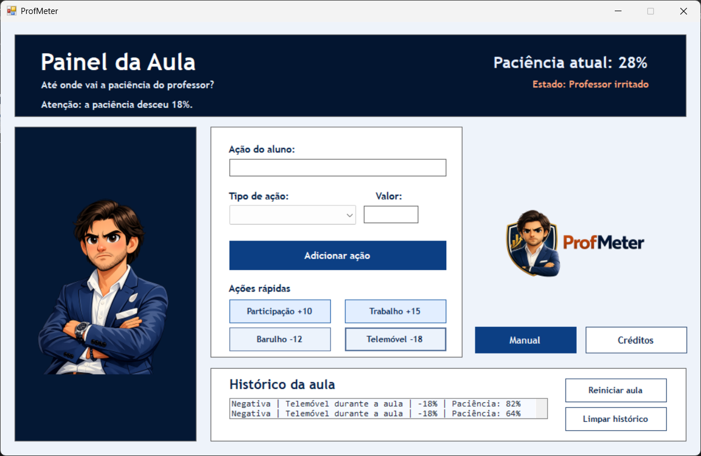

Simulação interativa
O utilizador escreve uma ação, escolhe se é positiva ou negativa e indica um valor numérico.
O ProfMeter transforma uma aula numa simulação interativa: cada ação dos alunos altera a paciência do professor, muda o seu estado e fica guardada num histórico.
Grupo 5
É uma aplicação simples, criativa e divertida para representar a dinâmica de uma aula. O professor começa calmo, mas as ações dos alunos podem melhorar ou piorar a sua paciência.
O utilizador escreve uma ação, escolhe se é positiva ou negativa e indica um valor numérico.
A paciência atualiza automaticamente e nunca ultrapassa 100% nem fica abaixo de 0%.
O professor muda de imagem consoante o seu estado, tornando a aplicação mais expressiva.
A aplicação combina validações, estruturas condicionais, estruturas de repetição e gestão de dados em memória.
A experiência fica mais clara porque cada intervalo de paciência tem uma imagem associada.
Esta secção apresenta exemplos da interface final da aplicação e demonstra o funcionamento das principais opções.
Mostra a aplicação ao abrir, com a paciência a 100% e o professor no estado calmo.

Mostra a paciência a diminuir após uma ação negativa inserida pelo utilizador.
Mostra a lista de ações registadas durante a simulação da aula.
Para executar o ProfMeter, o computador deve cumprir alguns requisitos básicos.